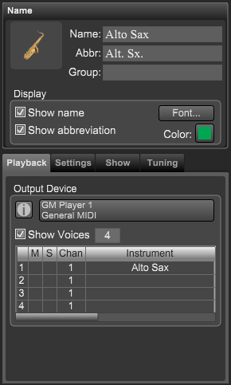
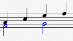
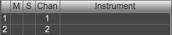
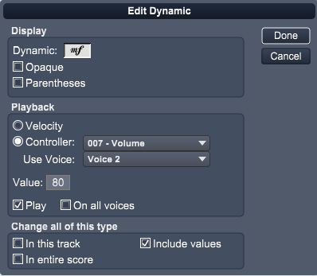

Track Inspector Panel - Track
If the Track Inspector panel is not showing click on the Inspector button at top right of Control Bar or type "Shift-I" to open the panel.
The Track panel contains settings for the appearance and playback of the current track.

|
Name - Allows you to change name, font, and display options for current track.
- Icon - Click here to set the track's icon.
- Name - The name to be displayed on the first system.
- Abbr - The name to be displayed on systems after the first.
- Group - The name to be displayed when using Group names.
Display
- Show name - Select this to display the track's name of first system.
- Show abbreviation - Select this to display the track's abbreviated name of remaining systems.
- Font - Click this button to choose the font for all track and abbreviation names.
- Color - Click this button to set the color for this track.
Tabs - Allows you to change the tracks' playback and display settings.
- Playback - Choose device and MIDI playback settings.
- Settings - Change the track's staff type and number of voices.
- Show - Used to show what parts of the track are displayed.
- Tuning - The string tuning for guitar tracks.
- Drum Map - This is only shown for percussive tracks and lets you map pitches to drum heads and staff position.
Note: To enter multi line track names use the following format. Name [1\2].
The brackets and backslash tell Overture to display the enclosed text on multiple lines separated by the backslash character.
Ex. Setting the track name to Piccolo [1\2] will result in the name being displayed as shown below.

|
Using the Track Playback Settings
Drag the horizontal slider to scroll through all the settings.
For each of the track's voices as set in the Show Voices numeric:
- M - Mute this voice
- S - Solo this voice.
- Instrument - The name of the instrument derived from the corresponding Sound Map file.
- Volume - The initial MIDI volume to be sent at the start of playback.
- Pan - The initial MIDI pan to be sent at the start of playback.
- Pitch - The amount each MIDI note is transposed by during playback.
- Bank - The MIDI bank to be sent at the start of playback.
- Patch - The MIDI patch (Program change) to sent at the start of playback.
Advanced usage of track voices.
Overture can use the voices setting in two different ways.
- The first is to use them to create polyphonic voices in a track as shown below.

The quarter notes are in voice 1 and the half notes are in voice 2.
- The second way to use them is to change playback settings.
Set the channel, pitch, program, etc. on a voice to different values and then assign notes, key switches, expressions, etc, to use this voice.

During playback the MIDI volume for this dynamic will be sent on channel 2 because is is using the channel setting for Voice 2.
